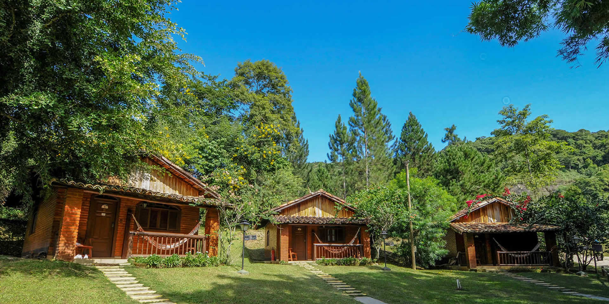
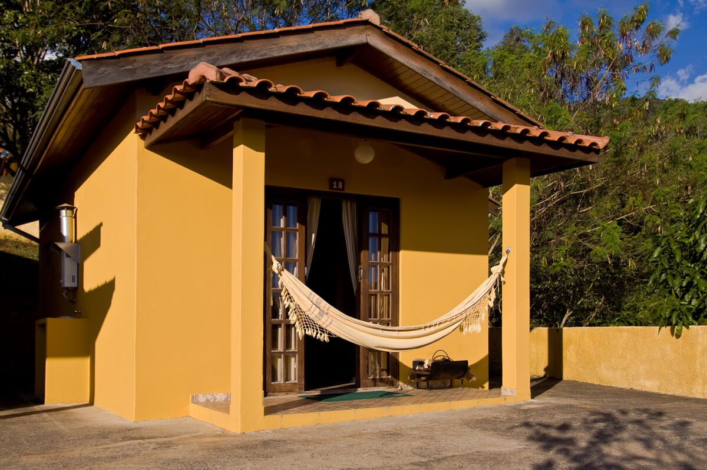

História do Chale Hotel
Bem-vindo à página "História" do nosso encantador Hotel Chalé! Aqui, convidamos você a mergulhar em uma viagem no tempo e descobrir a história fascinante que deu origem ao nosso estabelecimento único. Desde as suas raízes humildes até se tornar um destino de renome, cada capítulo de nossa história é entrelaçado com amor, dedicação e o desejo de criar experiências memoráveis para nossos hóspedes.
Nossa história remonta a um período em que o ritmo da vida era mais sereno e as paisagens intocadas da natureza eram apreciadas com reverência. No coração desse cenário idílico, encontramos um chalé modesto construído por uma família apaixonada pela beleza natural. Os fundadores do nosso hotel, Sr. e Sra. Smith, possuíam uma visão clara: compartilhar o esplendor das montanhas e a tranquilidade das florestas com os viajantes em busca de uma escapada inesquecível.
Hoje, o nosso Hotel Chalé é um verdadeiro oásis de serenidade e encanto. Cada detalhe, desde a arquitetura até a decoração, foi cuidadosamente planejado para criar uma atmosfera acolhedora e sofisticada. Oferecemos aos nossos hóspedes uma experiência de hospedagem incomparável, onde a natureza exuberante encontra o conforto moderno.
Seja você um viajante em busca de aventuras ou alguém que procura um retiro tranquilo, nosso Hotel Chalé está pronto para recebê-lo com os braços abertos. Junte-se a nós nesta jornada pelos encantos do passado e presente, e permita-nos criar memórias inesquecíveis juntos.
-

O refúgio perfeito para uma estadia relaxante e confortável.
-

Aprecie vistas deslumbrantes e paisagens de tirar o fôlego em nosso hotel chalé, onde a natureza se revela em toda a sua magnificência.
-

Descubra um mundo de lazer e diversão em nosso hotel chalé, onde cada momento é uma oportunidade para criar memórias inesquecíveis.
[ Desenvolvido por SENAC ]